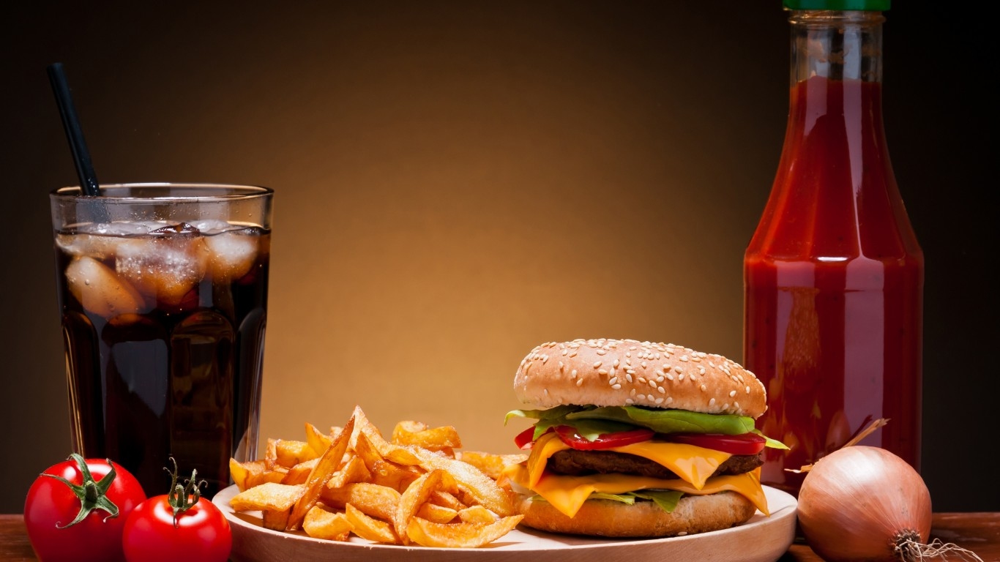
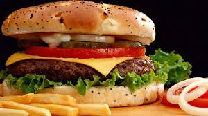

Khuyến Mại!
Chi tiết sản phẩm
Hamburger


- Bánh hamburger (đọc là hăm-bơ-gơ hay hem-bơ-gơ, phát âm tiếng Anh là /ˈhæmbɜrɡər/) là một thức ăn bánh mì kẹp có miếng thịt xay (thường là thịt bò) ở giữa. Miếng thịt có thể đã được nướng, chiên, hay xông khói và thường được ăn với một số gia vị ở giữa hay miếng bánh mì hình tròn. Chúng thường được thưởng thức với khoai tây chiên.
- Hamburger được coi là món ăn tiêu biểu của người Hoa Kỳ. Họ thường nướng bánh hamburger trong các cuộc liên hoan ngoài trời trên vỉ barbecue. Hamburger thường được nướng ở sau vườn để cả gia đình cùng ăn. Thịt hamburger thường được mua sống và có thể có vi khuẩn gây hại, cho nên cần phải được nấu chín kỹ lưỡng.